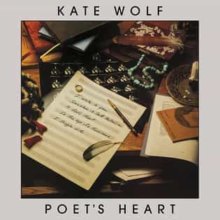

Poet’s Heart
~ Kate Wolf ~
Poet’s Heart by Kate Wolf is a lovely folk album released on July 1, 1985. Music Journalism professor Raoul Hernandez bestowed this beautiful vinyl upon me after I expressed my love for Joan Baez. I too quickly fell for Wolf’s enchanting melodies and the ever so delicate twang to her voice and her guitar.